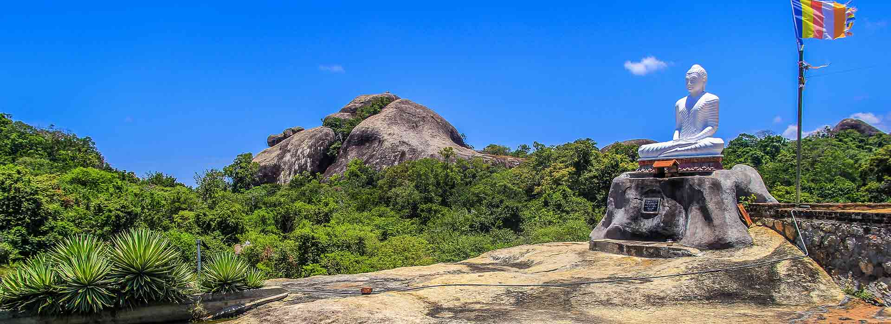

A peaceful village reservoir near Arugam Bay, surrounded by wildlife, paddy fields, and natural beauty.
Panama Tank, also known as Panama Wewa, is a beautiful rural reservoir located near Arugam Bay in the Eastern Province of Sri Lanka. It is surrounded by lush greenery, paddy fields, and traditional village life.
The area is well known for its peaceful atmosphere and rich biodiversity. Visitors can often spot birds, elephants, and other wildlife near the tank, especially during early morning and evening hours.
Unlike crowded tourist attractions, Panama Tank offers a quiet and authentic experience, making it perfect for nature lovers, photographers, and those seeking relaxation.
Back to Arugam Bay Hub